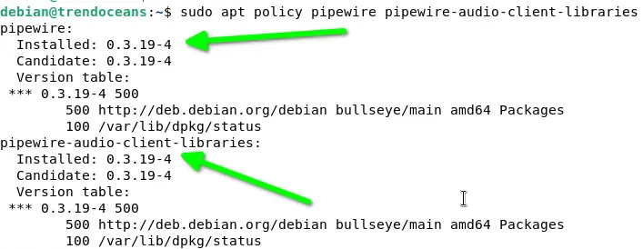
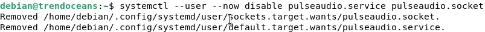
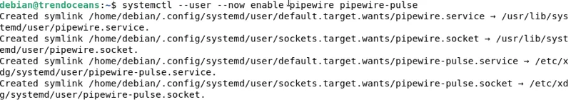
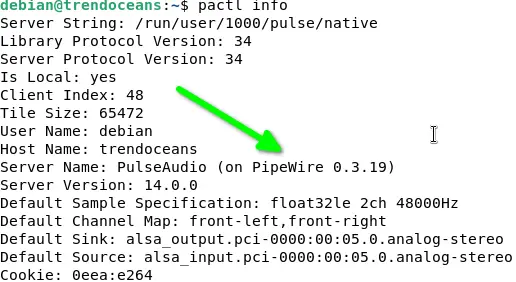
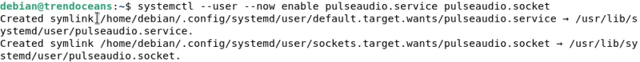
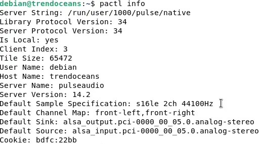

Установка и включение PipeWire в Debian 11
В официальной документацией сказано, что PipeWire скорее всего уже установлена в лобой современной операционной системе. Особенно это касается операционок Debian 10, 11 и 12. Однако PipeWire может находиться в неактивном (невключенном) состоянии.
Чтобы сделать PipeWire основным сервисом воспроизведения звука, необходимо внести некоторые изменения в систему, которые заменят сервер PulseAudio на PipeWire.
Перед тем как это делать, необходимо выяснить, установлен PipeWire или нет. Чтобы это проверить, можно использовать команду apt policy, которая покажет информацию о запрашиваемом приложении и его зависимостях, которые вместе с ним установлены. Чтобы это сделать, надо выполнить следующую команду:
$ sudo apt policy pipewire pipewire-audio-client-libraries
В ответ будет выдано примерно следующее:

В выводе команды видно, что установлены пакеты pipewire и pipewire-audio-client-libraries.
Инсталляция PipeWire
В случае, если было выяснено, что утилита PipeWire вообще не установлена в системе, необходимо воспользоваться следующей командой, которая произведет инсталляцию:
$ sudo apt install pipewire pipewire-audio-client-libraries
Замена PulseAudio на сервер PipeWire в Debian
После того, к необходимые пакеты и библиотеки установлены в систему, следует заменить PulseAudio на PipeWire. Для этого необходимо произвести следующие действия.
Шаг 1: Создать пустой файл
Перво-наперво нужно создать пустой файл /etc/pipewire/media-session.d, используя команду:
$ sudo touch /etc/pipewire/media-session.d/with-pulseaudio
Шаг 2: Создать сервис pipewire-pulse
Далее, следует создать сервис pipewire-pulse. Для этого надо скопировать файлы /usr/share/doc/pipewire/examples/systemd/user/pipewire-pulse.*
After that, create a pipewire-pulse service by copying the example files from /usr/share/doc/pipewire/examples/systemd/user/pipewire-pulse.* has two different files, pipewire-pulse.service and pipewire-pulse.socket, to /etc/systemd/user/ to manage them using the systemctl command.
$ sudo cp /usr/share/doc/pipewire/examples/systemd/user/pipewire-pulse.* /etc/systemd/user/
Step 03: Reload the daemon file
Once the above step is performed successfully, execute the below command, which will reload the new service that we have created just now.
$ systemctl --user daemon-reload
Step 04: Disable PulseAudio service
After that, execute the below code to disable the currently running PulseAudio service.
$ systemctl --user --now disable pulseaudio.service pulseaudio.socket
The behaviour of the above command

Disable PulseAudio service in Debian 11
Step 05: Enable and start the PipeWire service:
Once you have disabled the PulseAudio server, execute the below code, which enables and starts the pipewire-pulse service.
$ systemctl --user --now enable pipewire pipewire-pulse
The behaviour of the above command

Enable PipeWire on Debian 11
After following the above steps, your system is now fully configured to use PipeWire over to PulseAudio, but how do I know whether my system is using PulseAudio or PipeWire? It is pretty simple to execute the pactl info command, which will list out the server name.
$ pactl info

Debian 11 using PipeWire
As of now, your system is currently using PipeWire, but once you restart your computer, it will automatically change the current audio server to PulseAudio, which means you have to manually enable PipeWire every time you restart your computer, which is not acceptable at all for anyone.
To prevent this kind of situation, you can mask the pulseaudio.service which will disable the PulseAudio service to use by default.
To make these changes permanent, execute the below code:
$ systemctl --user mask pulseaudio
After executing the above command, restart your system to implement the new changes.
$ sudo reboot
Currently, PipeWire is not reliable to use as the default audio service, and even the official guide does not suggest you use PipeWire as a default audio service, which may give you unexpected results.
As per Simon McVittie, “This is not a supported scenario for Debian 11, and is considered experimental.”
It may break certain applications, lack certain functionality, or not work at all.
If you too face any kind of audio issue while using it, then you can follow the below steps, which will disable the PipeWire and enable the PulseAudio back.
Step 01: Unmask PulseAudio
If you have masked the PulseAudio server in the above step, then don’t forget to unmask it first. Otherwise, subsequent commands will throw an error.
$ systemctl --user unmask pulseaudio
Step 02: Disable PipeWire
After that, you can execute the below code to stop PipeWire.
$ systemctl --user --now disable pipewire pipewire-pulse
Step 03: Enable PulseAudio
Lastly, run the final command which will enable the PulseAudio service to be used as normal.
$ systemctl --user --now enable pulseaudio.service pulseaudio.socket
The behaviour of the above command

Enable PulseAudio
Step 04: Check Status
Once the above command is performed successfully execute pactl info command to check audio server if the output display the “pulseaudio” as a server name, then you are work is completed here.

PipeWire to PulseAudo
And for any reason, if you get an error like “Connection failure: Connection refused pa_context_connect() failed: Connection refused”, then, first of all, try to restart your system, and even if that doesn’t get fixed, then you can comment down your query below. We will be happy to give you a hand.